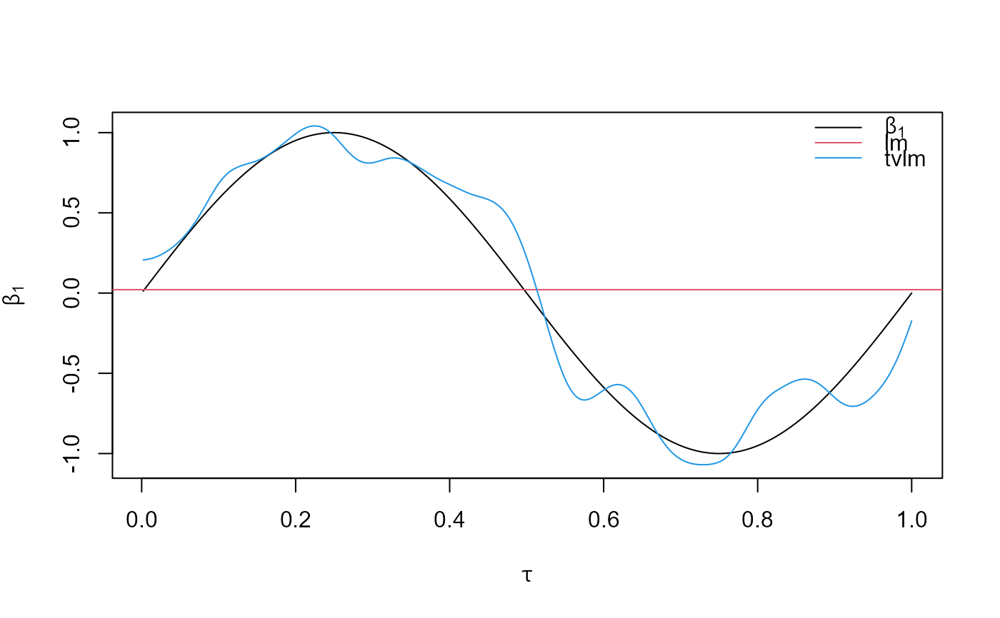

tvOLS estimate time-varying coefficient of univariate
linear models using the kernel smoothing OLS.
tvOLS(x, ...) # S3 method for matrix tvOLS(x, y, z = NULL, ez = NULL, bw, est = c("lc", "ll"), tkernel = c("Epa", "Gaussian"), singular.ok = singular.ok, ...) # S3 method for tvlm tvOLS(x, ...) # S3 method for tvar tvOLS(x, ...) # S3 method for tvvar tvOLS(x, ...)
| x | an object used to select a method. |
|---|---|
| ... | Other arguments passed to specific methods. |
| y | A vector with dependent variable. |
| z | A vector with the variable over which coefficients are smooth over. |
| ez | (optional) A scalar or vector with the smoothing values. If values are included then the vector z is used. |
| bw | A numeric vector. |
| est | The nonparametric estimation method, one of "lc" (default) for linear constant or "ll" for local linear. |
| tkernel | The type of kernel used in the coefficients estimation method, one of Epanesnikov ("Epa") or "Gaussian". |
| singular.ok | Logical. If FALSE, a singular model is an error. |
tvGLS returns a list containing:
A vector of length obs, number of observations with the time-varying estimates.
A vector of length obs with the fited values from the estimation.
A vector of length obs with the residuals from the estimation.
tau <- seq(1:500)/500 beta <- data.frame(beta1 = sin(2*pi*tau), beta2= 2*tau) X <- data.frame(X1 = rnorm(500), X2 = rchisq(500, df = 4)) error <- rt(500, df = 10) y <- apply(X*beta, 1, sum) + error coef.lm <- stats::lm(y~0+X1+X2, data = X)$coef coef.tvlm <- tvOLS(x = as.matrix(X), y = y, bw = 0.1)$tvcoef plot(tau,beta[, 1], type="l", main="", ylab = expression(beta[1]), xlab = expression(tau), ylim = range(beta[,1], coef.tvlm[, 1]))